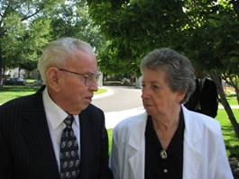

Life Sketch of
Richard Stephen Browning
EARLY YEARS
By Joyce
Before I began I want to give a special thanks for mom, Elise and Janet for countless hours of tender service to dad over the past years most especially the past several months. I want to thank my dad for all he taught me, working with him, and the fun times, observing his unconditional love. I am proud to be his daughter.
Richard Stephen Browning was born January 6, 1924, in the home of his parents, Charles Henry Browning, and Viola Rebecca McFate, in Sugar City, Idaho. He had two older sisters; Geneva and Florence (we called her Flossie) and an older brother, Cleo. Dad’s family called him Rich. He always said, “I may not have much money but I will always be Rich.” And his wife, Mom, could claim, “I married Rich.”
When Dad was six years old, he had pneumonia and almost died. The doctor operated on him and took out part of a rib and drained his lungs. The first time he stood up and started to walk across the room he fainted. He had to learn to walk again. Because of this illness, he was a year late starting school.
As a child Dad always liked to play with toy bulldozers and trucks, make roads and bridges, and make tree houses. Maybe that is why he chose the vocation he did. He never liked school until high school. Then he quite liked agriculture class, an aeronautics class, typing and especially the basketball games and dances.
Dad’s family lived in Sugar City during the winter, so that the children could attend school. But in the summer they lived on a dry farm on Canyon Creek. It consisted of 640 acres, a three-room log house, root cellar, barn, machine shed and granary.
After several years of hard work, drought, hail and poor price for wheat Grandpa lost his farm. It was a sad day for Dad. Some of his fondest memories are of that grand old place.
Dad had a dog named Snip that he trained to pull him on a sleigh in the winter and a wagon in the summer. They had some good times together. One day Dad and his cousin decided to go camping. They put blankets and food in the wagon that Snip pulled. It started to get dark. Thinking it was getting night time they decided to get their bed roll made and go to bed. Then it started to rain. After a while the sun came out again. Because they were wet and cold they decided to go home for the night.
Dad could hardly remember his mother. In the fall of 1932, when Dad was eight years old, Grandma became ill suddenly and died. Dad’s oldest sister and brother had both married that summer so that left Aunt Flossy to take over the home chores. One time she tried to get Dad to do the dishes. He didn’t want to, so ran outside and climbed up on a rope. The rope broke and Dad fell and broke his arm. He didn’t have to wash dishes for some time.
In 1934, when Dad was 10, Grandpa married Margaret Hill Young who had two children, Margaret and Robert (Uncle Bob), who were both younger than Dad. Three boys were born to this union, LeRoy, Kenneth and Irven.
Grandpa heard of a big boom at Sun Valley. Grandpa made arrangements to move his butcher shop into a store at Ketchum, one mile from Sun Valley. Grandpa and Dad went to Ketchum. Housing was scarce due to the sudden influx of people. They had a homemade camper for the pickup, made of three bows and a custom made heavy treated canvas cover, much like a covered wagon, which they lived in for several weeks. Marge and the three younger kids, Margaret, Bobby and Roy came out later. The first house they lived in was a tent house about 16 feet square, made of rough lumber floor and walls about 4 feet high with a canvas top. Later they moved into a better home, a cabin.
Dad attended the sixth and seventh grades of school at Ketchum. He did a little skiing and was a caddy on the golf course.
The boom was mostly over in a couple of years and the family moved out of Ketchum. Dad went back to Sugar City and stayed with his older brother’s family. Dad was 14 and earned his keep by working in his brother's store after school, during lunch, and on Saturdays, and other odd jobs during the summer. One summer he ran a butcher shop for Van Price in Driggs, Idaho. Dad graduated from the Sugar Salem High School.
The day after graduation Dad and his friend, Mark Hulet, were hitch hiking a ride to Victor where their parents lived. Their first ride was from Sugar City to Clementsville. They were walking down the road from there when a farmer, Roy Anderson, came along and offered them a job on his dry farm. Mr. Anderson said he could tell a good worker from the way they hitch hiked. The ones who got out and hiked were good workers but the ones that just stood or sat at the side of the road were lazy. Well, Dad took him up on his offer, $90.00 a month, 12 hours a day, 7 days a week, room and board, and a farm deferment from the draft. Mr. Anderson and his sons also had a dairy farm in Lost River Valley where Dad helped milk 80 heads of Holstein cows during the winter. He didn’t like the cow milking, but he really liked the dry farm.
Dad would tease us by saying that the dust got so thick you could ride the dust out over the canyon to turn around. Because of the dust they had to clean the air filter quite often. Dad was cleaning the filter with gasoline. Mr. Anderson got after him and said, “don’t use that expensive gasoline. It cost 15 cents a gallon. Use diesel, it only costs 10 cents a gallon.”
MILITARY
By Elise
Dad said, “I couldn’t convince Uncle Sam that farming was more important than soldiering and was drafted on 28 June 1944.” Dad reported to Fort Douglas Army base in Salt Lake City and after a few days was sent to Arkansas for infantry training. After seventeen weeks of infantry training Dad and some of his buddies had a choice to make. They could have two weeks delay in route to Japan or they could join the paratroopers, take an additional four weeks paratrooper jump school at Fort Benning, Georgia and be home for Christmas on the way to Germany beside getting $50 a month jump pay, in addition to the $50 regular pay and then another $50 when they went overseas.
The recruiters told the men that if they joined the paratroopers they wouldn’t have to march and get blisters on your feet and carry all that gear. They would be flown to the job. Dad said the recruiters where right about not marching, now they had to run. Dad graduated with wings and was home on furlough for Christmas.
Dad was sent to France and was there until the Germans surrendered. His unit made several practice jumps. They were alerted and equipped with ammunition and on the plane two different times all ready to be dropped on the front lines when the maneuver was called off because of the successful advancement of the ground troops.
Dad was on the way to Japan by way of the U.S. when the Japanese surrendered. He arrived in New York to a hero’s welcome. Then he was sent to Fort Bragg, North Carolina. Since he had some experience in running a movie projector, he was given that job at camp. He would run the projector 3 or 4 hours a night but the rest of the time he was free to do about anything. One of his buddies became assistant to the chaplain and because of his position had access to a jeep and they spent time riding around the country. This was an enjoyable stay but they were anxious to get home. They were sent back to Fort Douglas for discharge.
When Dad was discharged from the Army on April 29, 1946, he came home and went to work in Island Park cutting down mining timber. After a week of that he went to work at a rock quarry near Victor. It was lime rock which was used to process sugar. At first he was using a sledge hammer to break up the rock. Soon he was able to drive the truck hauling the rock from the quarry to the railroad where it was loaded onto railroad cars and taken to the sugar factory. That was a much better job. That fall he went to Sugar City and stayed with his brother, Cleo, and family. He spent the winter working in the potato cellar and chasing girls.
FAMILY
By Elise
In February of 1947, Dad met Lois Wheeler at a stake dance in Rexburg. She was attending Ricks College. They dated until school was out in June. The next winter they began dating again. In December Dad went to Jackson, Wyoming to work in a butcher shop. They continued to write and to see each other on weekends. Dad gave Mom a diamond ring on May 16, 1948, and they were married in the Salt Lake Temple on June 24, 1948.
On the 11th of June 1949, they welcomed their first child, a little dark haired, brown eyed baby girl. They named her Janet.
On January 23, 1952, Dad took Mom to the St. Anthony Hospital in Pocatello. Fifteen minutes later Dr. R.R. Merrill announced to Dad that they had a red headed blue-eyed baby girl. This was Carla.
The rest of the children were born in the hospital with the star on top. Phillip Stephen was born March 12, 1953. He was the first boy. The next child was Elise, born June 28, 1955. Then there were two more boys, Deven Kay born September 2, 1956 and Dale Richard born August 5, 1958. The seventh child came to the family February 22, 1960. We named her Joyce.
Family was very important to Mom and Dad. They supported their descendants and extended family in special occasions such as blessing of babies, baptisms, graduation, priesthood ordinations, weddings, funerals, musical performances, drama productions, and sporting events. They loved family reunions.
Dad also kept in touch with schoolmates by attending class reunions.
HOMES
By Carla
Mom and Dad made their first home in Jackson, Wyoming. The home was a small camp trailer, about 15 feet long and 8 feet wide. They had it parked in a trailer park where they could hook up to water and electricity. There was a public rest room, shower and laundry that they could use. It was quite comfortable and not much house work.
When the weather became cold the trailer park closed and they were obliged to find another place to park. One of the customers of the store where Dad was working, an elderly, widow lady by the name of Mrs. Saunders, offered to let them park by her home, which was closer to town. She was very good to them and they really enjoyed visiting with her. Because of the cold temperature they could not hook up to a water supply, but carried water from the house. The trailer was heated by an oil heater. A barrel of oil was outside the trailer with a small tube attached to bring the oil to the heater.
The winter of 1948-1949 was one of the hardest winters that has been recorded in this area. The snow was very deep that winter and the weather was very cold at times. The trailer had thin walls and no insulation. Most nights it was so cold that the blankets on their bed would be frozen to the wall when they awoke. They were thankful to have enough bedding to keep them warm. One night the temperature dropped to 60 degrees below zero. At that temperature the oil could not flow through the tubing, so the fire went out. When morning came they brought a can full of oil into the trailer and put it in the tank on the heater and were able to get a fire going.
The months of February and March were especially difficult for the Jackson area. Because of the mountainous terrain many snow slides occurred, blocking the roads so that no vehicles could get through. Nothing came into the area for three weeks until they were able to get some mail and medical supplies flown in by air.
The last of the snow melted about the first of May and spring came again to the Jackson Hole area. Dad traded in the trailer for a new one and they moved in on June 4. It had insulated walls, was about three feet longer, and had a water heater but not a bathroom. However, they really were happy to be living in such a nice home. Shortly thereafter they celebrated their first wedding anniversary. They had experienced several different circumstances, but had learned that they could cope with trials in their lives and also appreciate the blessings they had. It had been a good year!
In September of 1949 Mom and Dad moved to Idaho Falls, Idaho. The store in Jackson was sold and Dad had to seek employment elsewhere. He dug sugar beets for the U & I Sugar Company. When that job was finished Dad began selling Rena Ware cooking utensils.
In December a welcome job was offered in Pocatello cutting meat for Okay Food Stores. Mom and Dad never thought they would like to live in Pocatello, as it was a big wicked city, but were very glad to find work, especially that time of year. They moved their 18-foot trailer home to the Barret Trailer Park on Yellowstone Ave. Mom and Dad really enjoyed living in Pocatello and raising their family.
In the spring of 1951 Dad bought 5 acres of land on Mink Creek Road for $500.00 from J. V. Frazier. He financed it by selling war bonds that he had bought while he was in the service. They moved their trailer onto the property April 9, 1951.
When Mom and Dad moved onto the property it was nothing more than a sagebrush-covered hill and some Juniper trees. It took two weeks before they could get electricity. It was four months before they were able to get a well drilled so they could have water. They brought water from town for culinary purposes, but sometimes they dipped water out of a ditch that ran through the property and heated it on a bonfire to do the laundry.
Dad borrowed Mr. Frazier’s horse and plow and plowed a little garden spot below the ditch that ran through the place. He watered the garden out of the ditch with a syphon hose. They had a very good garden, even cantaloupe.
Dad rented Anderson’s tractor, plow and scraper and dug the basement and also a place to put the well.
Dad tried to get a loan to build a house but without a credit record nor enough ground for a farm loan they gave him the run around. Dad didn’t want to go in debt anyway, so they lived in the trailer house for two more years.
In the spring of 1953 Dad began working on the basement. He sold the trailer house to finance the project. They wanted the trailer by the opening of fishing season the latter part of May. Dad put up the cinder block walls and got a roof overhead but no floor. The concrete was poured in one room but it was not dry enough to walk on when they came to get the trailer. They moved into the one room that had a dirt floor and a trench for a sewer pipe running through it. They put a little trash burner in one end to use for heat and to cook with. A few days later they were able to move into the other room home where it was more comfortable. Later that summer they were able to put a concrete floor in a third room and that gave them two rooms and a bath room. We lived in the basement until May of 1961. A few years later Dad was able to add a two-car garage onto the house. It was several years before Dad was able to buy bricks for the outside of the house. Dad was able to do much of the brick work.
The nice thing about not finishing the house all at one time is that he never had to make any monthly house payments, nor did he have interest to pay. How many can say they never had a mortgage. But we were very comfortable and happy.
WORK
By Carla
Dad was a hard worker. Dad cut meat for Okays for about eight years. In his spare time he plowed gardens and did landscaping with his tractor. Later Dad bought some hay equipment and did custom haying. One time Dad asked for some time off to do some haying. The boss at the store asked him which he would rather do. He told him cut hay. Dad decided to quit the store and cut hay. It was a hard decision to make. The steady income was hard to give up. But he didn’t like working Sundays and preferred working with machinery so decided to make the change.
Dad’s brothers, Roy, Ken and Irven and Mom’s brothers, Delynn and Byron, helped quite a bit in the summer. He also hired some other help at different times.
Through the years Dad taught his children to operate the trucks, tractors and hay equipment. All of the boys helped Dad as much as they could and even us girls helped some.
Dad had two hay balers for a while and did custom haying for people in Inkom, Marsh Valley, north to and on the Indian Reservation and also in Arbon Valley. He decided to get out of the haying business and do landscaping only. So he sold the hay equipment to the Pocatello Stake farm. Dad continued doing landscaping and plowing gardens until 1972. At that time Dad bought a backhoe and added digging basements to his vocation. He seemed to be making more money with the backhoe so he concentrated more on that kind of work. In 1975 Rex Browning came to help Dad and they established a partnership called Browning Excavation. They dug basements for many homes and put in sewer systems for numerous people. Grant Stowell hired them to put in the water system in the Indian Hills Subdivision. Dad, Rex and Phillip spent most of the summer of 1976 in Rexburg helping with the clean up after the Teton Dam broke and flooded the area. Dad worked with Rex until the latter part of 1992 when he sold his share of the business to Rex and began preparing to go on a mission for the Church.
After dad got home from his mission, he was watching Janet machine quilt and thought he could do that. He started quilting and ran the quilting machine up until the Charlotte Fire, this year.
For the last 20 years if Dad was not quilting he was usually outside taking care of the yard, or chopping wood for the wood stove. When he was not busy with that you may of found him watching Little House on the Prairie.
CHURCH CALLINGS
By Janet
We would like to thank you for coming, for your kindness and your support.
Dad served in many callings in the Church of Jesus Christ of Latter-day Saints.
He was called to head the Senior Aaronic Priesthood where he helped activate and prepare at least 5 families to go to the temple and be sealed for eternity.
During the time that dad was Elders Quorum President there were two session of Stake Conference held at Pocatello High School. Being the president he was in charge of the dinner between sessions, held at the 1st ward building that was across the street in the parking lot behind where the seminary building is today.
He was called to be a Stake Missionary where he taught and had about 26 baptisms his first year.
He was ordained a Seventy. One of their projects was showing movies, dad got us kids involved by us serving the popcorn candy and drinks between reals. They showed the good movies like Old Yeller, Pollyanna, Follow Me Boys, or Seven Brides for Seven Brothers.
He was called to be chairman of the Genealogy Committee.
When dad was called to be the 2nd counselor to Bishop Harold Lloyd with Lynn Holiday as 1st counselor he was set apart by Joseph Fielding Smith. One Christmas the three of them went to every family in the ward and sang Christmas Carlos. It took them several evenings but they had an enjoyable time.
Dad also served in Scouting as Cub Scout Committee Chair and Assistant Scout Master.
Mom and Dad both served together as directors of the names extraction program, as temple workers and as full time missionaries in the Alaska Anchorage Mission. They were assigned to serve in Glennalan and Sitka, Alaska and Whitehorse, Canada.
Mom and Dad were ordinance workers in the Idaho Falls Temple for 8 years from December 1996 to October 2004.
Mom and Dad served on a stake sponsored sealing team until August 31, 2009. Dad enjoyed going to the temple and knew of the important service that takes place there.
Dad was a home teacher and was able to touch many lives through that service.
Dad did his preaching by living what he preached.
We never missed a church meeting, even on our vacations, unless we were sick.
TRIPS AND VACATIONS
By Janet
Dad was a hard worker. He also knew how to have fun. He liked to play games with family and friends. He was good at checkers and liked to play Racko. But his favorite was a game we call “Mormon Bridge.”
Saturday night was spent watching Lawrence Welk. Sunday nights were time for popcorn and apples.
When we were young, dad would come home from work and say let’s go swimming or lets go camping. How we enjoyed swimming at Lava Hot Springs or Indian Springs or Green Canyon. I have memories of camping in Yellowstone Park, Stanley Basin, Green Canyon.
Winters were especially fun for us because we had snow machines. Dad was normally a quiet, calm, cautious man. But when he got on a snow machine, he was quite aggressive. We spent many memorable times riding snow machines.
In 1976 Mom and Dad bought a time share condominium in Island Park. They enjoyed going to Island Park over the years and always shared the time with friends and family. They had a Club House where we could swim, sit in the hot tubs, play racket ball or ping pong. They would go snowmobiling when the weather was good enough. Almost every year they went through Yellowstone Park. They usually made it to Old Faithful but several times made the loop around Thumb, Yellowstone Lake and Canyon. Our favorite places to go were Two Top and Big Springs. Other places of interest were Mesa Falls and Lion Head. On stormy days we would play games or watch movies.
Mom and Dad owned several different Motor homes. They took vacations all over the United States. They have been to all of the states except (9) Hawaii, Maine, Vermont, New Hampshire, Massachusetts, Rhode Island, Connecticut, (I’m not sure about Delaware) and New Mexico.
Rich and Lois were very generous and never took a vacation without a parent, sibling, child, grandchild, niece, nephew, or even a friend along.
One of my vacations with then was in 1992, when they took me, JaNae and Tassi to Missouri to get the quilting machine. We stop at Church sites and spent 3 days in Nauvoo. This was a turning point in JaNae’s life.
Dad gave us a wonderful heritage and a great legacy. He has 28 grandchildren and 34 great-grandchildren. We had a very comfortable life. We have many happy memories to remember him by.
We would like to thank Access Home Health and Hospice for the loving kindness in helping us to take care of dad.
Mine was an honor and privilege to be able to help care for dad the last two months. We had some very tender moments together. I know the veil was very thin. He asked me if I would like him to take my picture with all those people that were there behind me. I wish he could have. I know he is with his mother and father sisters and brother. I know he is forgiven for not knowing his colors and is worthy to be with Heavenly Father.
We love you Dad!

PS. Note: not given at the funeral. When I (Janet) was a little girl I did not know dad did not know his colors. Dad would point to my color crayons and ask what color is that and then to another and another. I just thought he was checking to see if I knew my colors. About the time I started to drive is when I became aware he was color blind. He knew the stop light by where the red or green light was. He couldn’t see the colors of the flowers so didn’t like them very much. He thought the drapes and the wall was the same color. One day this in the last few weeks dad had a hold of my hand and was praying to Heavenly Father that he would be forgiven because he didn’t know his colors and would be found worthy.